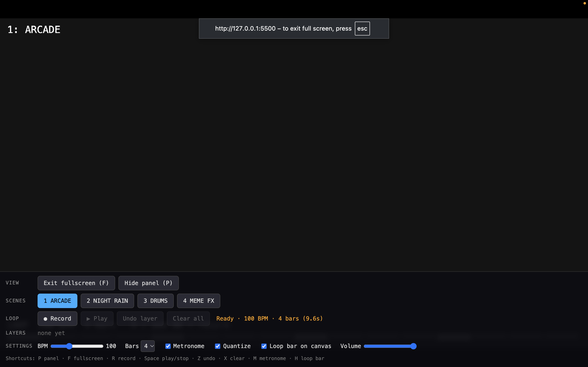

Student · Södertörn University
Elias Nordenberg
I'm a Student at Södertörn University. I find music fun and like to play around with it!
Work
- Sound in motionsoftware
Sound in motion is a live audio program where we play an Akai MPK Mini and every key and pad triggers sound and pixel-art visuals in the browser, built with p5.js and Tone.js.
